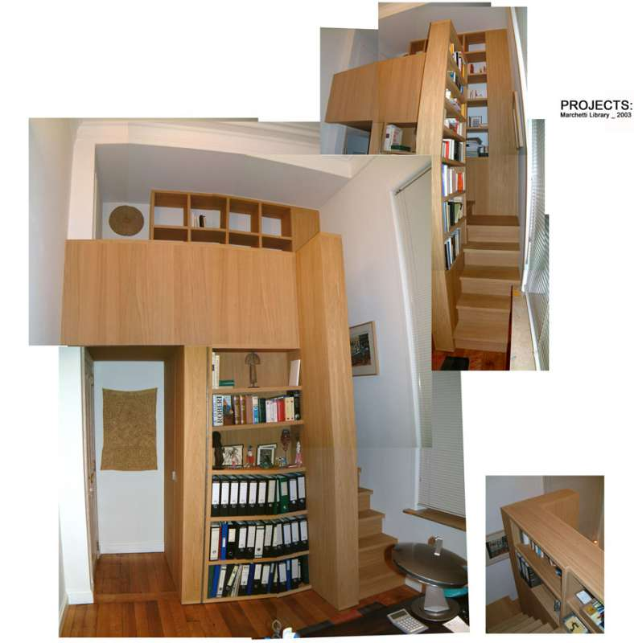
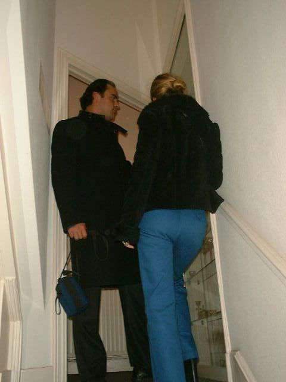
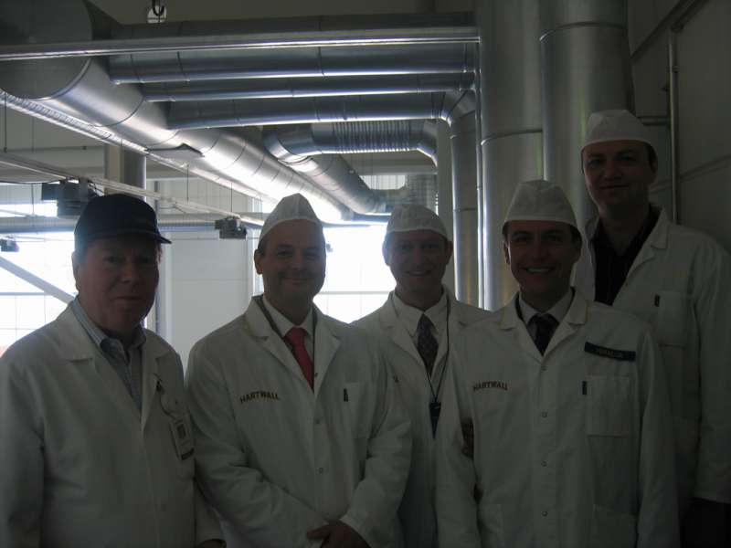
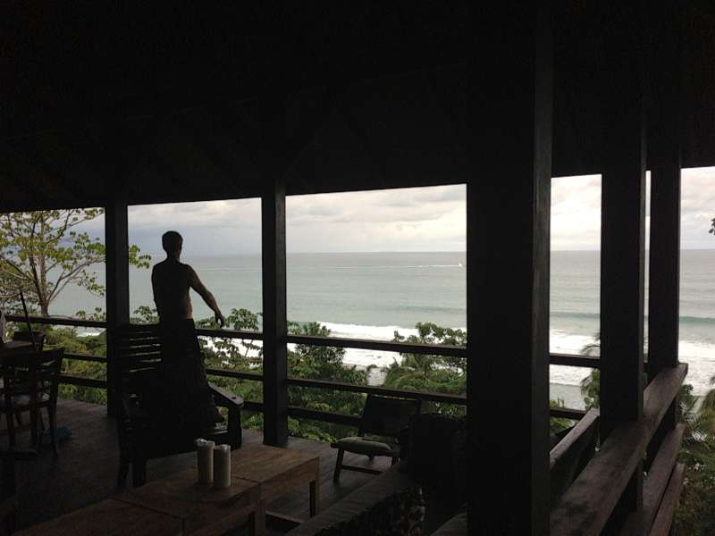
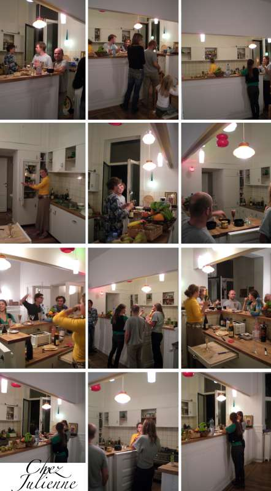
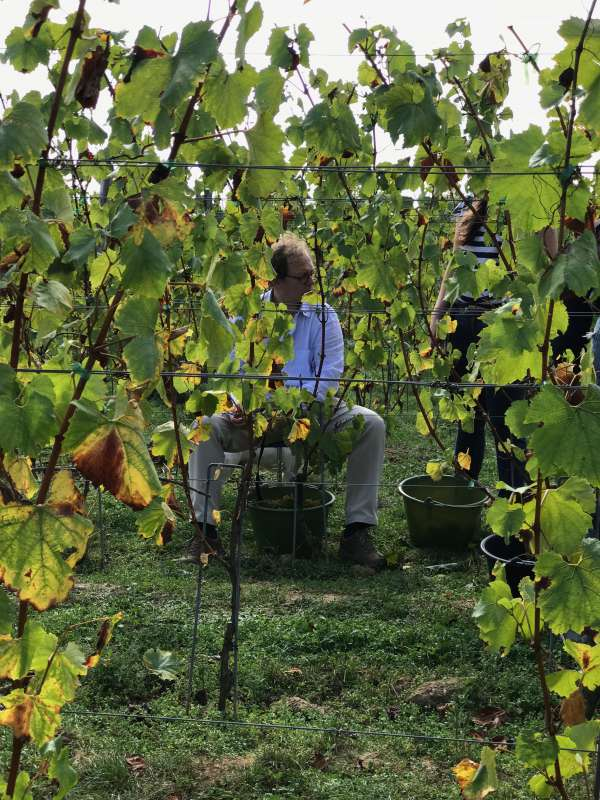
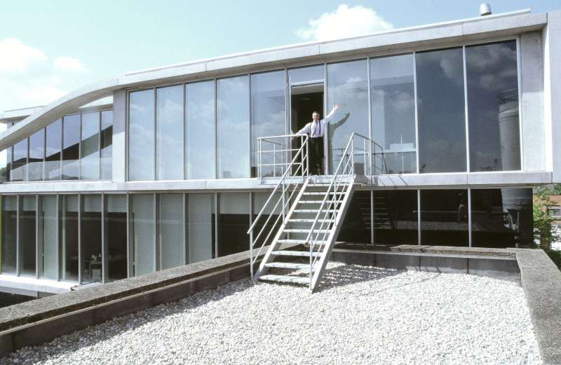
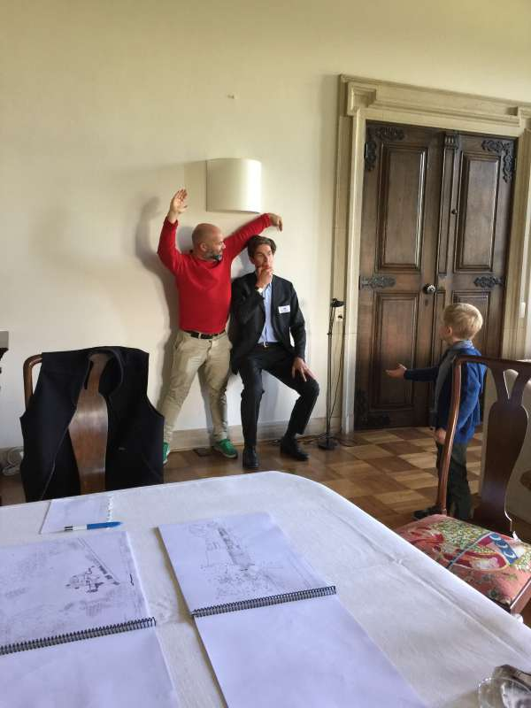
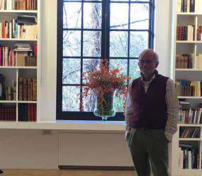
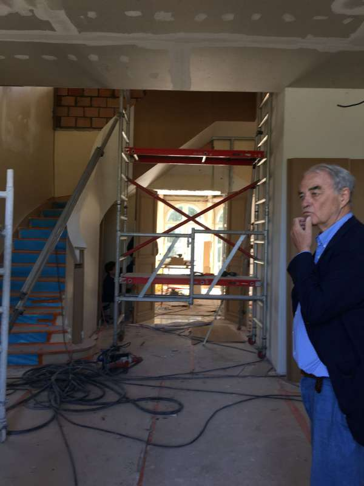

Avenue des Ablettes 2 Witvissenlaan
Bruxelles 1160 Brussel
T +32 2 770 54 22
e-mail : info@awaa.biz
AWAA offers a soft architecture as it dawns from strong dialogues. Interaction with the client brings out
unexpected and particular projects. AWAA does not propose a stylistic line but an architecture that takes
shape in the dialogue between the client, his program, his desires and his budget, the site, its features
and constraints, the nature and space, the gravity and time, the peculiarities of the materials, our
know-how... AWAA’s job is to loom all these data to an amplified reality, a shared project. We carve the
space of constraints.
In 21 years, 212 open files, including 99 projects built for a total
of 39 different clients, including 14 " repeat customers"
That's almost 2 projects a year. We have completed 17 projects for one client, 12 for another, 8 for “X”,
6 for “Y” and 2 to 3 projects for 10 other clients.
Thanks to the architect’s excellent understanding of our prefabricated system from the outset, the clean -lines of the concrete walls were brought to the fore. The result was a very high- quality, clean-cut building at a very attractive price per square metre. This cutting-edge building in terms of energy efficiency, costs and liveability, has been used as a model for many other projects.
- Dirk Deroose
Charly, we have worked for several architects and we can see the difference... I congratulate you and all your team for your project management, your attention to detail and above all your constant efforts to ensure the client is satisfied with the final result.
- Francis Geernaert
We have been lucky to be able to spend some time working with AWAA on redeveloping offices and/or retail space as well as private projects. These close collaborations enabled us to refine our services, our thinking and our on-site work, thanks to constant contact and fruitful discussions. I think this is the key to successfully completing the work and creating a finished product that meets the client's expectations.
- Bernard Agneessens
I remember it very clearly, just as if it were yesterday. I was unable to reach a wasted, upper space close to a 4.4 metre-high ceiling. I could only see one way to get there: a sort of staircase with compartments like you find in the Far East. We talked about it, and you asked for a little time to think about it. Soon after, you brought me a plan that had everything: elegance, practicality and safety. This solution achieved your aim of fitting the location while perfectly fulfilling my wishes. I have ended up with a stunningly simple unit that incorporates a coat cupboard as well as the staircase and bookcase. A great work of art!
- Jean Marchetti
We have worked with Charly and his office to build two houses ; one in 2005 in Knokke , Belgium and one in 2008 in Biarritz , France . Both have been a very, very good experience and we are extremely happy with the services provided and the end result. Charly is an amazing architect who finds the right balance between the customer taste and his own vision. Most architects fail in this delicate balance and go in one of both directions: imposing their artistic taste onto the client or fail to advise the client when his vision will not result in an attractive end product. The second great quality Charly has, is a great combination between artistic talent and logistic/administrative follow-up. Also, this is quite exceptional because many architects have only one of both qualities needed to build a great house. An architect cannot only be an artist and not follow up correctly all details of the construction nor can an architect be a simple executor of plans. In conclusion, we were very very happy with Charly’s great input during the design phase , his meticulous follow up of the construction and also his service and availability long afterwards our houses were delivered. When we had any issues with the builder or construction years after delivery of the house, Charly was always there to help and dig up necessary information.
- Toni Vandewalle
Sex is good, but AWAA is better.
- Marc Largent
'At Awaa, not only do they carefully listen to the needs and expectations of every stakeholder involved in/related to the project; but they also investigate every possibility with the right balance between creativity and feasibility.
- Michel Moortgat
'In one sentence : I would do it again with Charly and his AWAA team. And I am saying this without being under threat. I really appreciated during all the process : - the sincere effort to truly understand our needs, our dreams, and our nightmares particularly at the start of the project. - the dedicated, nitpicking, precise, boring, tenacious follow-up of all the construction process of our 17.000 sqm project, which allowed me to sleep while others were working overnight. - the capacity of AWAA to accept that circumstances, or better understanding, justified to adapt the project continuously. - and above all the feeling to share a common experience and objective, and to have fun together. So I dare to repeat myself and insist : I would do it again.
- Augustin Wigny
Passion, Excellence, Empathy for the client, Perfection, Talented to the extreme, Charming, No words.
- Bart van Vooren
The feeling you get when working with AWAA is of “being in good hands”. Not only when looking at the whole factory to transform into lofts, their choice of space division was very smart and provided for great living spaces. But then, and quiet importantly in my opinion for an architect (and unfortunately not wide-spread), their command of the technical elements of execution of the works gave me as a client great confort that the decisions taken were the most durable ones - an important factor in real estate which is a long term oriented sector. And the diligence they demonstrate in following up the execution of the work, documenting all aspects at each phase, ensures me that in case of conflict with a contractor, my interest will be defended with strength. Finally, cherry on the cake, their insights into sustainability make them one of the relevant architects for the 21st century.
- François de Borchgraeve
My kitchen was designed by 'my dear' Awaa team more than14 years ago. Since then, it is my favorite room in the house, because it precisely reflects what I love, ideally, in the organization of a space : functionality , lightness, quality, and a special spirit that relates all of these qualities to the past. The conservation of this charm, essential to my eyes, was very much respected, and harmonized with the contemporary refreshment that I was equally looking for. All this to say I felt absolutely answered by the very intuitive ears of Charly Wittock and his team, and I sincerely saw my whole family blossom in this kitchen.
- Julie Lippens
Passion, attention and excellence at the service of art-chitecture. The culture of the beautiful, for the long term. The marriage of aesthetics and functionality. A dream comes true thanks to the passion and excellence of a team of multi-skilled architecture artists. A passionate commitment from Charly and his team to achieve an exceptional result together.
- Michel Verhaeghe
From our collaboration I keep in mind an enrichment in regard to new architectural visions as well as new technologies.
- Margil Gutmer
'AWAA’s spaces are a series of encounter with light and volume which unfolds like a book in real space and time. The experience is very much like when walking into a garden, a butterfly suddenly landed on one’s shoulder. It is the unexpected encounter which makes the experience magical, poetic, fragile and elusive in the meantime.
- Ming Wei Lee
Awaa : Ah, Waoow !
- Philippe Moortgat
It is a unique experience to have meetings with Charly and AWAA. Unique in its perfect balance of amicability and ease and professionalism and structure. Unique is the way AWAA takes in what each partner expresses with equal attention. As a woman, I found this to be a rare experience. Their listening is impeccable. Their Art is in their ability to hear our story, our desires and our dislikes and translate them into a Living Space. It is quite awesome. They sincerely work to Serve us: the client. In the xx years together AWAA never had the ambition to impose a certain signature. I think of the word Ego-less. This allows for a fearlessness and a generosity in their presentations. I feel AWAA sincerely seeks to create a material reflection of the clients’ aspirations and soul purpose, yet never losing light of the practical! (how will you bring the shopping in?)( how many steps will you take to go to the loo at night?) My only criticism is that they are too nice, and it’s too hard to let them go so ... you just have to continue building. Or in our case drawing. Perhaps it is the Beautiful Humanity that is communicated through the entire process of creating with Awaa that I respect the most. Awaa is sincerely rooted in a space of Compassion and Mindfulness.
- Valentine Goblet
14.000 books create a critical mass; can one fathom the amount of characters these books, essentially of literature, history and politics may contain? And possibly release? Hundreds of thousands.. So, to tame the books and all their stories, large empty spaces needed to be build, so as to allow for mediation and meditation. A world for many drawings also, some friends and a single reader. I remember less the works than the long conversations we had with AWAA. The main room was suddenly called the Observatory, though it has no windows; it says it all. Less a library for books than a study for the reader. The Pavillon is a nutshell. A place to read, to write, perchance to dream.
- André Querton
We asked to Charly and his team to help us in the renovation of our house. This was heavy work as we needed to fully automate the house to be in line with the most up to-date systems, to include new lighting systems, new bathrooms, a new kitchen, new wooden floors, new acoustic ceilings, new heating systems and a new staircase including a new lift... We received a very close follow-up from Charly and his team thru the whole process, with creative solutions when needed, maximum availability and opened minded spirit. Indeed, they followed the work on a day to day basis of all the different groups of skilled workers with a lot a professionalism and they intervened when necessary when it was not up to our standards. They followed the execution of the contract and the financial conditions through the whole process and negotiated for us all the necessary adaptations when necessary. In conclusion, Charly and his team do their job in an outstanding way, they are extremely hands-on, almost available 24h a day and 7 days a week. They react very quickly when there are some issues. They are very focused on the work while creating a very friendly atmosphere. It is a pleasure working with them. We can only advice to our friends to work with them.
- Isabelle Schulling & Pierre Drion
